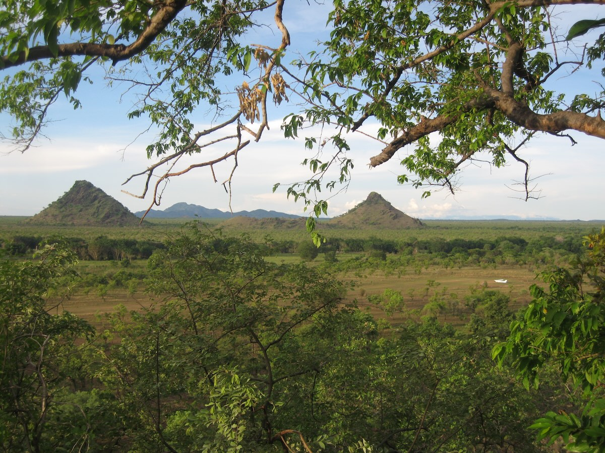

Ecoimpacts
A strategic advisory practice based in the Cotswolds, dedicated to ensuring conservation commitments translate into impact on the ground — bridging ambitious policy and plans with the complex reality of protecting nature in the world's most challenging landscapes.

This year's projects include a recently completed global conservation progress review for UNEP and ongoing work with the Wildlife Conservation Society on national park planning in the Central African Republic.
This year's projects include a recently completed global conservation progress review for the United Nations Environment Programme (UNEP) and ongoing work with the Wildlife Conservation Society (WCS) on national park planning in the Central African Republic.
Connect with us on LinkedIn